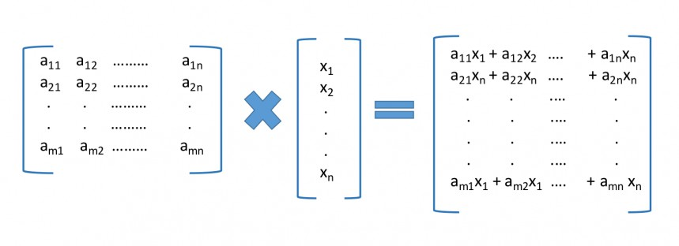

Partitioning ¶
The primary objective of the partition.py script is to distribute the computational dataspace processed by an OpenCL kernel given a partition class value and a dataset value. The partition class value is a number from the integer set {0,1,...10} where 0 is interpreted as processing 100% of the dataspace on the CPU, 10 is interpreted as processing 100% of the dataspace on the GPU. Any number x in between represents the situation where (100-x*10) % of the dataspace is processed on the CPU and the remaining x*10 % of the dataspace is processed on the GPU. In this context, we present a simple matrix vector multiplication kernel and discuss how it is partitioned across one CPU and one GPU.
An Illustrative Example
Matrix and Vector Multiplication :The standard matrix-vector multiplication application computes the dot product of each row of an input matrix with a column vector and generates an output vector.

The corresponding OpenCL kernel code is shown below.
1 2 3 4 5 6 7 8 9 10 11 |
typedef float DATA_TYPE; __kernel void atax_kernel1(__global DATA_TYPE *A, __global DATA_TYPE *x, __global DATA_TYPE *tmp, int nx, int ny){ int i = get_global_id(0); if (i < nx){ int j; for(j=0; j < ny; j++){ tmp[i] += A[i * ny + j] * x[j]; } } } |
As evident from the above code, the kernel requires one 2D input buffer for the matrix, one 1D input buffer for the column vector, one 1D output buffer which is the output vector and two variables denoting the number of rows and columns of the matrix to be processed. The kernel performs a matrix-vector multiplication and stores the result in an output buffer which is a column vector. The corresponding specification file is saved in the info folder in the PySchedCL package. The parameter details for the specification file is depicted below.
JSON file :
1 2 3 4 5 6 7 8 9 10 11 12 13 14 15 16 17 18 19 20 21 22 23 24 25 26 27 28 29 30 31 32 33 34 35 36 37 38 39 40 41 | {
"globalWorkSize": "[dataset]",
"inputBuffers": [
{
"break": 1,
"pos": 0,
"size": "dataset**2",
"type": "float"
},
{
"break": 0,
"pos": 1,
"size": "dataset",
"type": "float"
}
],
"name": "atax_kernel1",
"outputBuffers": [
{
"break": 1,
"pos": 2,
"size": "dataset",
"type": "float"
}
],
"partition": 8,
"src": "atax.cl",
"varArguments": [
{
"pos": 3,
"type": "int",
"value": "partition_round(dataset, size_percent)"
},
{
"pos": 4,
"type": "int",
"value": "dataset"
}
],
"workDimension": 1
}
|
As stated earlier, each element of the output vector is the dot product of the corresponding row of the matrix and the column vector. Therefore, it is safe to partition the matrix row-wise so that the computation can be distributed across both CPU and GPU devices in the heterogeneous platform. For a partition class value of 5, half the rows of the matrix would be used for computing half of the output vector on a CPU device while the other half would be computed on a GPU device. After computation, the final output vector is accumulated on the host side.
The fact that only the input matrix and the output buffer is to be partitioned needs to be specified. As discussed in the Kernel Specification File section, this is done by setting both the break fields for the first inputbuffer and the outputBuffer to 1.
After designing the kernel specification file, one can run the partition program by specifying the path of the kernel specification file along with the partition class value and dataset size.
$ ./partition.py -f info/atax1.json